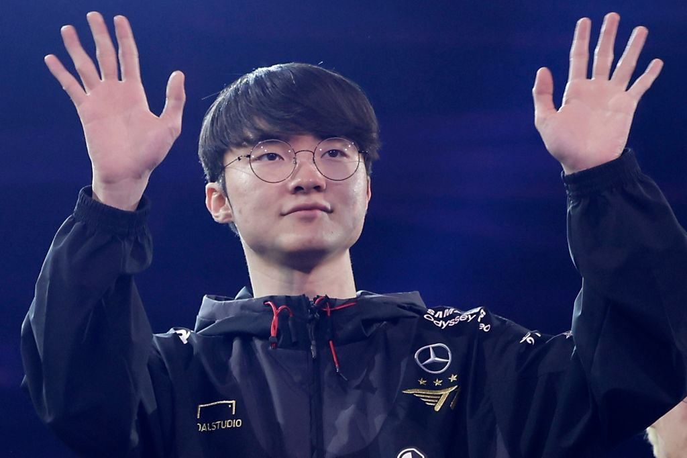
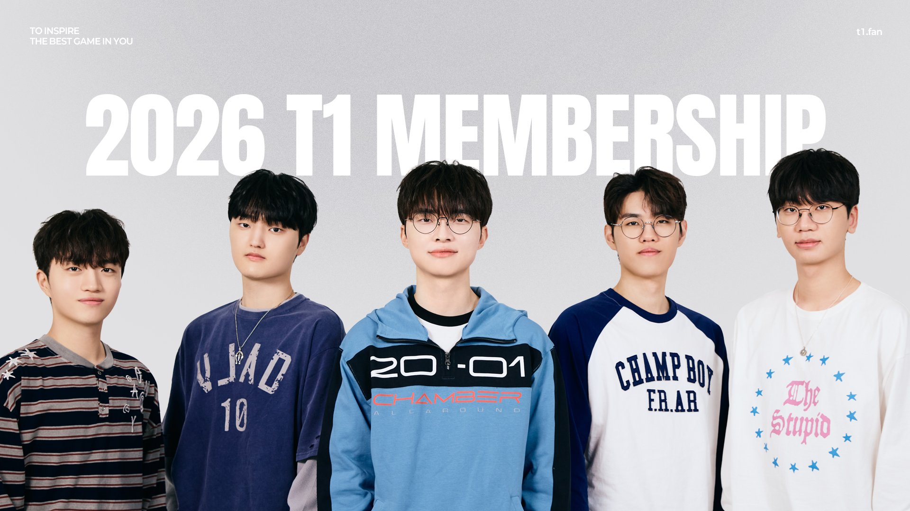
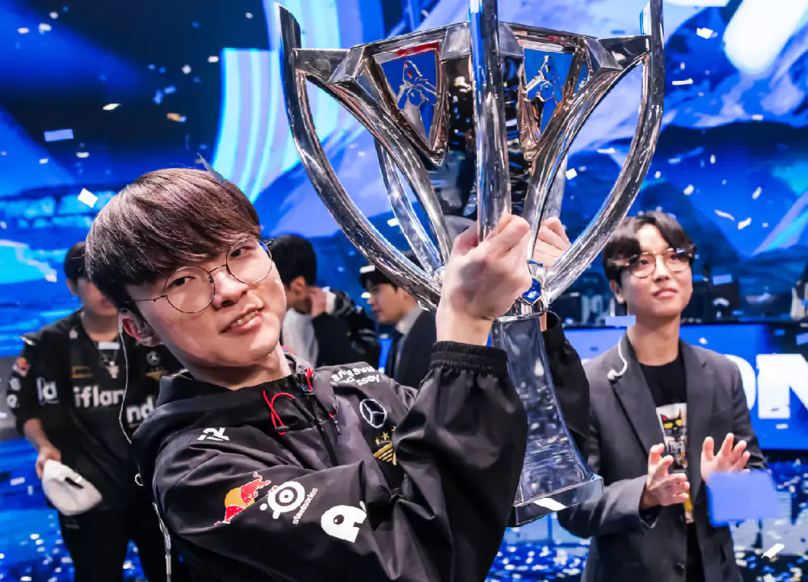

Faker

Faker is the most famous professional player in the video game League of Legends. His real name is Lee Sang-hyeok. It has been 13 years since he made his debut, and he is now 30 years old. He has won six major titles, far surpassing other professional players.
Team History

The T1 team has undergone several roster changes; its current starting lineup consists of Choi Hyeon-jun, Mun Hyeon-jun, Lee Sang-hyeok, Kim Soo-hwan, and Ryu Min-seok.
Championships

T1 has won the World Championship six times, participated in approximately 60 major League of Legends tournaments, and earned over $10.3 million in prize money.